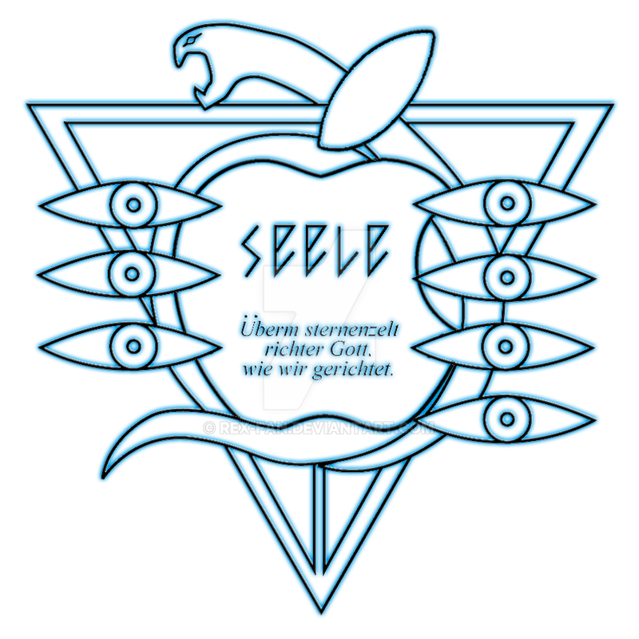
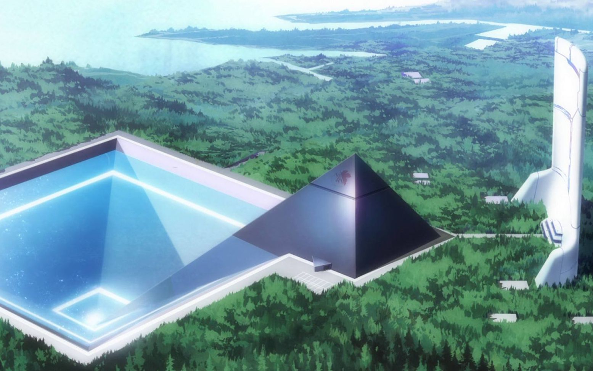
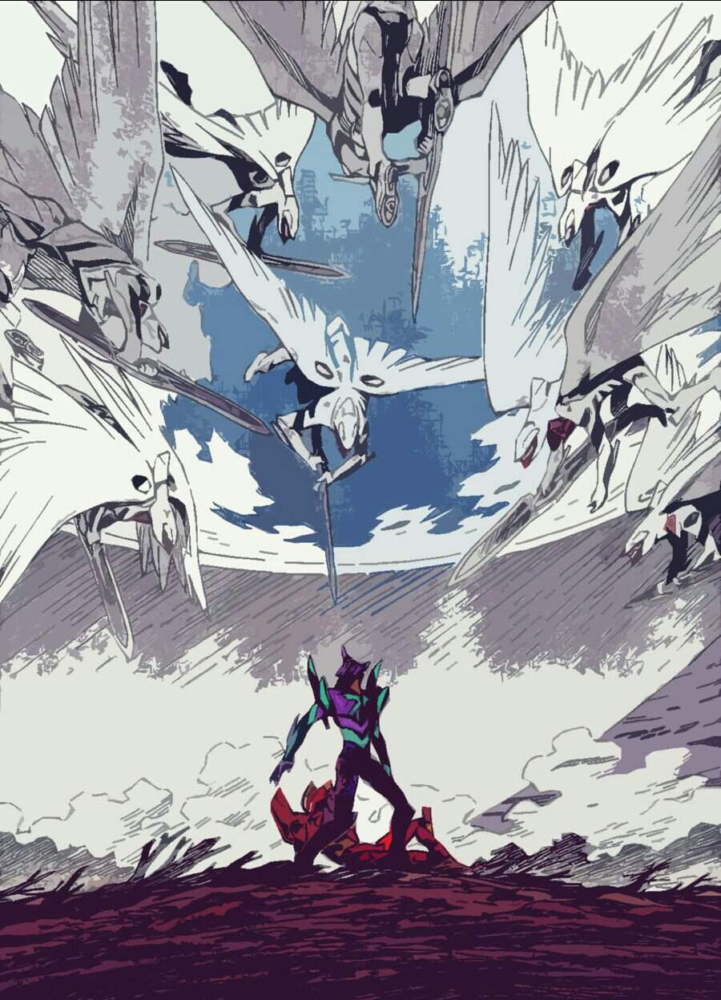
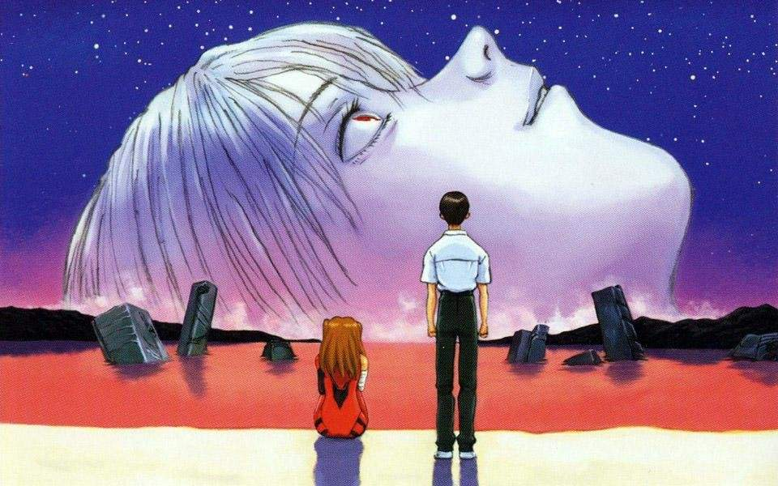

Neon Genesis Evangelion o también más conocida simplemente como Evangelion es un anime creado por
el estudio Gainax,
transmitido desde el 4 de octubre de 1995 hasta el 27 de marzo de 1996.
La historia comienza con unos seres conocidos como la primera raza ancestral. Entre la soledad del espacio
ellos decidieron
crear nueva vida en más planetas, con esto creron dos semillas con forma de luna: la de la vida
conocida como Adan que viajaba en
una luna blanca y la del conocimiento llamada Lilith que viajaba en una luna negra.
Ambas semillas fueron mandadas a vagar
al espacio para comenzar a crear nueva vida. Dentro de cada luna llevaban una lanza
(lanza de Longuinus) y un manuscrito
que explicaba como crear nueva.
Adan, la semilla de la vida comenzaria a crear criaturas grandes y poderozas con
el nombre de "Ángeles", mientras
que Lilith crearia seres pequeños muy inteligentes capaces de crear civilizaciones llamados
"Humanos". Ambas semillas
tenian el único labor de seguir expandiendo la vida en cada planeta, con la única regla que si
ambas semillas cayeran
en el mismo planeta la lanza de Longuinus se usaría para sellar a la semilla que llegó despues. Esto con
el fin de que
ambas no se unan, tanto las semillas como la vida que creaba cada una con el fin de evitar una catastrofe.
Mientras tanto Adan ya había comenzado a crear Ángeles cuando de repente Lilith cae en la tierra junto a Adan.
El impacto fue tan grande que la lanza con la que viajaba Lilith se rompió, haciendo que la lanza que tenia Adan lo
sellara, mandandolo a un estado de hibernación de esta manera Lilith comenzó a desarrollar vida en la tierra tal y como la
conocemos. Lilith creaba vida llenando el plante de un liqupido llamado LCL, cada ser vivo esta compuesto por esta
sopa junto
a unas barreras llamadas Campos AT, o sea que si este campó desaparece se vuelve a convertir en esta sopa
La caída de esta
segunda semilla en la tierra (cuando Lilith llegó a la tierra) fue conocida tiempo despues como
el Primer Impacto
Miles de años después una compañia llamada SEELE encontro los manuales de instrucciones que acompañaban a las semillas de vida
a los que llamaron Manuscritos de Mar Muerto, luego de descifrar el lenguaje lograron leerlas, entendiendo todo
a cerca de:
- Las razas ancestrales
- Los ángeles
- Las lanzas
- La creación de la vida
Además de eso descubrieron la ubicación de la luna negra, la que contenia a Lilith en un estado de

letargo, es decir que luego de cumplir su tarea y crear vida en el mundo se durmió. En el año 2000
SEELE descubrio que la luna blanca
donde llegó Adan se encontraba en la Antártida y enviaron a un grupo de investigadores dentro de los cuales se encontraban
Gendo Ikari y el Dr. Katsuragi junto a su pequeña hija Misato. Los altos mandos de SEELE le dijeron a estos científicos que
el motivo de su viaje era encontrar un motor de energía ilimitada que se encontraba dentro de Adan. También había un motivo
más grande y oscuro detras de la expedición el cual solo era conocido por los altos mandos de SEELE y Gendo. El grupo llegó al
lugar donde se encontraba Adan, la expedición provocó que despertara y liberara un poderoso Anti Campo AT haciendo que los seres vivos
se convirtieran en LSL. Poco antes del despertar de Adan el grupo de expedición trato de controlar a Adan lograndolo apenas. Provocando
así su auto destrucción provocando a la extinción de toda la vida en el continente, de los integrantes de la expedición solo
sobrevivieron dos personas: Gendo, quien un día antes había escapado del lugar y Misato quíen fue encerrada en una capsula protectora
por su padre. A esta catastrofe se le conocio como
Segundo Impacto. Debido a la explosión el alma de Adan quedó separada
de su cuerpo. SEELE logró hacerse con ambos el cuerpo quedó bajo un estricto cuidado y el alma fue depositada dentro de Kaworu Nagisa
quien nació en extrañas circunstancias el mismo día del Segundo Impacto.
Proyecto de la complementación humana
El verdadero plan de SEELE es el
Proyecto de la complementación humana, para ello el ser humano ya no valia la pena como especíe por
todo el mal que ha hecho. Entonces buscan la manera de eliminar el campo AT de todos los seres vivos para así volverlos a convertir en LSL
de esta manera todas las almas se fusionarian creando a un solo ser el cual según ellos seria la forma perfecta de la humanidad. Para esto necesitaban
a Adan, Lilith y la Lanza De Longuinus.
Con la información encontraba en los Manuscritos Del Mar Muerto sabían que pronto aparecerian la descendencia de Adan los seres gigantescos
conocidos como ángeles, los cuales buscarian entrar en contacto con Adan para así liberarlo y originar la muerte de toda la descendencia de Lilith
para así ocupar el lugar que les correspondia originalmente. Debido a esto se creó una nueva organización llamada GEHIRN la cual fue contruida
al rededor de la luna negra. Esta se encontraba al mando de Gendo Ikari y de su esposa Yui. Su proposito era crear un sistema de defensa para acabar con los
ángeles que estaban por venir entonces usando el ADN extraido del cuerpo de Adan se empiezan a crear clones gigantescos llamados
EVA(s).
Hubieron bastantes fallos hasta que por fin se creari al
Eva 00 (doble cero) , luego se crearía al
Eva 01 la cual a diferencia de las anteriores
se crearía a partir de Lilith.
Tiempo despues de la exitosa creación del Eva 01, Yui, la esposa de Gendo descubrió el verdadero proposito de SEELE y estaba en contra de el
sabia que no podía hacer nada para evitarlo así que decidio fusionar su alma con el Eva 01, para lograr esto le dijo a Gendo que queria hacer
un experimento con el Eva para así subirse. El experimento finalmente se llevo a cabo terminando con su vida frente a Gendo y a su pequeño hijo
Shinji. Este suceso fue tomado como un accidente laboral, aunque Yui logró su meta, y su alma quedo dentro del Eva 01.
NERV
Es también por la misma época que se funda
NERV, una evolución de GEHIRN, la cual fue

construida dentro de la luna negra. Shinji comienza a pelear contra todos los ángeles, en estos capitulos la serie se comienza a volver
más psicologica, tomando una trama más oscura y triste.
En el transcurso en el que Shinji pelea contra los ángeles se comienza a
deprimir, abandonando todo y comienza a desperdiciar el tiempo con las personas que lo rodean. En el camino se entera que Rei es el
piloto del Eva 00, y también conoce a Asuka, la piloto del
Eva 02, en este periodo constante de matar ángeles ocurren 4 cosas
realmente relevantes:
- El cuerpo de Adan es robado por Ryoji Kaji, un triple espia, este robo se cometio bajo las ordenes de Gendo, y ahora es él
quien posee el cuerpo de Adan.
- NERV se hace con el control de la Lanza de Lonquinus, la cual se usa para sellar el cuerpo de Lilith, esto es llevado a cabo
por Rei.
- Cuando Shinji se siente perdido luego de pilotear al Eva 01 decide volver a abandodar todo e irse, pero en ese momento
aparece un ángel que derrota facíl a Asuka y a Rei, Kyoji lo convence de volver a pilotear pero también es derrotado hasta el
momento en el que el Eva 01 entra en un estado de locura, con lo que termina comiendose al ángel y asimilandolo algunas de sus
cualidades, colciendolo un ser superior.
- En cierto punto aparece un Ángel que no se puede derrotar de forma convencional porque se encuentra fuera del planeta, este
desestabiliza a Asuka impidiendo que no pueda volverse a subir al Eva 02. Al final del día Rei destruye al Ángel con la Lanza de
Longuinus que recientemente había sido sacada de Lilith, en consecuencia la Lanza se pierde en el espacio
El penultimo Ángel comienza a destruir a los Evas, como Asuka sigue inestable y Shinji tiene miedo de que el Eva se vuelva a salir de
control la encargada de recibir los ataques es Rei, la cuestión es que al final Rei puede comenzar a sentir emociones y decide
auto destruirse junto con el Ángel para así proteger a Shinji. Es aqui cuando Gendo la vuelve a clonar, creando asi a
Rei 3.
El problema es que vuelve a tener el alma de Lilith completa, debido a que tanto Rei 2 como el Eva 00 explotaron.
Las Intenciones de Gendo
Por el momento SEELE había ideado una nueva forma para lograr su plan. Ahora que la lanza estaba perdida y ya no podian controlar a
Lilith sin la lanza decidieron utilizar al Eva 01 como su sustituto, ya que este fue creado de Lilith y aparte se comió a un descendiente
de Adan por lo que le piden a Gendo que les den el Eva 01. Aunque al principio Gendo estaba de acuerdo con SEELE, luego de la muerte de
Yui su objetivo cambió completamente. Su nueva meta era fusionarse con el cuerpo de Adan, luego fusionarse con Rei y luego
volverse a fusionar con el cuerpo de Lilith para así poder volverse un ser divino capaz de revivir a Yui y junto a ella crear un mundo perfecto.
SEELE no se quedo con los brazos cruzados, primero enviaron a Kaworu como piloto de reemplazo para el Eva 02, obviamente nadie en NERV
sabian que dentro de este muchacho se esncontraba el Alma de Adan. Rapidamente Kaworu se gana el aprecio de Shinji, quien se encontraba
deprimido por la supuesta muerte de Rei.
Al día siguiente kaworu quien es también un Ángel comienza su plan, el pensaba que en el fondo
de la luna negra se encontraba el cuerpo de Adan y para llegar hasta allí usa el Eva 02. Hasta este punto todos en NERV se dan cuenta
que el es realmente uno de los Ángeles y envian a Shinji a detenerlo. Shinji se siente traicionado por Kaworu, pero a la vez siente la
capacidad de detenerlo sin tener que matarlo. Kaworu comienza a descender pensando que se unira al cuerpo de Adan pero para su mala suerte
lo que encuentra es el cuerpo crucificado de Lilith. Kaworu dandose cuenta de los planes de SEELE, le pide a Shinji que lo mate ya que esa
era la unica opción que le quedaba. Shinji termina aplastando a kaworu con el Eva 01 dejando el Alma de Adan libre nuevamente.
El plan de SEELE
Es en este momento cuando SEELE decide hacerse con todo a la fuerza, para ello le dicen al

gobierno que Gendo se volvio loco y planea utilizar
a NERV para destruir al mundo, el gobierno le cree y deciden mandar a miles de soldados para destruir la base y matar a toda la gente que
encuentren dentro. A Gendo no le queda de otra que más adelantar su plan y se lleva a Rei con sigo a ver el cadaver de Lilith. Mientras tanto
los trabajadores de NERV deciden salvar a los pilotos, Asuka quien aún seguía en shock fue puesta dentro del Eva 02 y ocultada en el fondo de
un lago, mientras que Shinji es salvado en el ultimo momento por Misato quien se sacrifica para llevarlo al lugar donde se encuentra el Eva 01.
Luego de muchas dudas y reflexiones Shinji se sube al Eva 01 y este alcanza una evolución en su sistema.
Mientras tanto, la invasión sigue
su curso, y Asuka que esta en el fondo del lago poco a poco comienza a recuperarse del shock mental gracias a su madre ya que el el Eva 02
tiene parte del alma de su madre adentro, así que gracias a esto ella se recupera y empieza a destruir todo el ejercito invasor sin ningun problema.
Todo parece ir bien, hasta que SEELE revela su arma más poderoza: los Evas de producción en masa. Estos son Evas más debiles que un Eva normal,
pero tienen la ventaja de poder ser controlados de manera remota además de poseer energía ilimitada, y por si no fuera poco llevan armas
con propiedades similares a las de la Lanza de Longuinus.
Gracias a esto logran vencer a Asuka, destruyendo al Eva 02 y matandola en
el proceso.
Con todos los obstaculos eliminados el plan de SEELE continua, ellos conocían el hecho de que el Eva 01 se habia convertido
en un ser que reunía las virtudes de Lilith y de Adan, y esto quedo confirmado cuando la Lanza de Longuinus que estaba flotando en el espacio
es atraida por el Eva ni bien este regresa a la superficie. Al mismo tiempo
Gendo y
Rei 3 se encuentran frente al cuerpot de Lilith.
Gendo revela que se había implantado el cuerpo de Adan en la mano y le pide a Rei que se fusione con él, por lo que inserta su mano en el cuerpo
de Rei. Ella estaba dispuesta a ayudarlo hasta que siente todo lo que estaba ocurriendo fuera, incluyendo a Shinji dentro del Eva 01. Rei 3
siente el mismo deseo de protegerlo que sintio Rei 2 momentos antes de morir, y finalmente traiciona a Gendo cortandole la mano. El embrión de Adan
se queda dentro de ella, lo que da inicio a la unión prohibida de la semilla de la
Vida y del
Conocimiento.
Complementación Humana Logrado
La unión prohibida da como resultado un gigantesco ser de luz con la apariencia de Rei. La Rei gigante comienza a crecer hasta encontrarse
con Shinji, quien al verla no puede evitar asustarse y desesperse. Para tranquilizarlo esta adopta la forma de Kaworu, lentamente la Rei
gigante comienza a absorver al Eva 01 mientras que Shinji comienza a tener alucinaciones y pensamientos de su pasado. En esto se cuestiona su
existencia y la importancia de el para los demás, finalmente llega a la conclusión de que a nadie le importa si el existe o no. Este pensamiento
influye sobre Rei, haciendo que por comienze el proyecto de la complementación humana.
Primero amplía su Anti Campo AT en un tamaño global
para convertir a todas las personas en LCL de nuevo, aunque no lo hace directamente así, en la tierra comienzan a aparecer cientos de millones
de Reis de tamaño humano las cuales se acercan a todas las personas del planeta, estas se manifiestan como la persona amada del individuo.

En cuestión de segundos todas las almas acabaron reunidas dentro de la luna negra, dejando al planeta cubierto de LCL. La única alma humana
conciente en el mundo es Shinji, es ahora cuando Rei le pregunta si quiere continuar con la
complementación humana o volver a todo
como era antes. Luego de muchos delirios psicologicos Shinji decide volver todo a la normalidad. Rei le dice que todo estara bien, que liberara
a todas las almas y que para volver a tener su cuerpo ella solo debe volver a imaginar su forma humana, como era de esperarse esto ocurre y
la Rei gigante finalmente muere. En el final de todo podemos ver que los primeros en volver a recobrar su forma y de salir del LCL son Shinji
y Asuka, lo que paso con el resto de las personas se deja a imaginación del espectador, aunque lo más probable es que todos volvieron a su forma
normal y el mundo... comenzó de nuevo.
FIN...